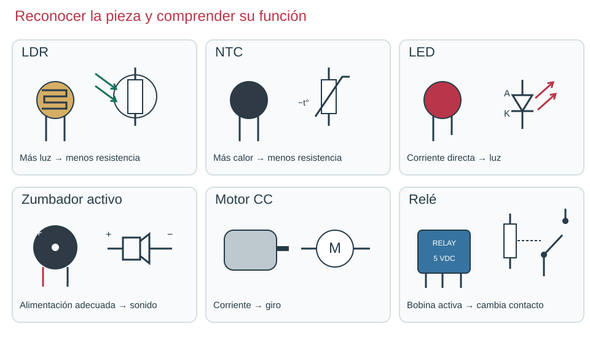
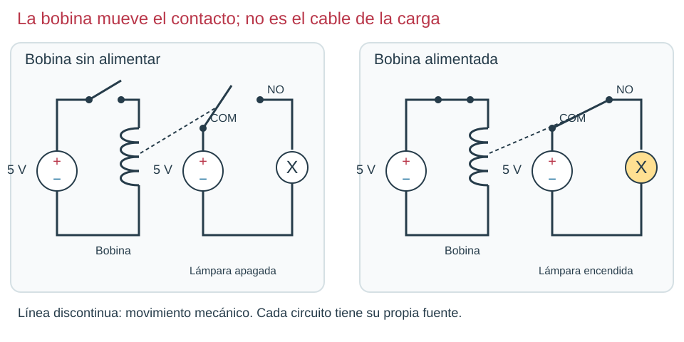

Contenido
Del entorno a una respuesta
Un sensor cambia alguna propiedad cuando cambia el entorno. En una LDR y una NTC cambia la resistencia; no crean por sí solas la energía de la salida. Un actuador transforma energía eléctrica en un efecto observable.

| Componente y terminales | Cambio o función | Antes de conectarlo |
|---|---|---|
| LDR · dos extremos | Más luz → menos R; menos luz → más R. | Medir en Ω, aislada y sin fuente; tapar y destapar. |
| NTC · dos extremos | Más temperatura → menos R. | Su valor nominal se refiere a una temperatura, por ejemplo 10 kΩ a 25 °C. |
| LED · A/K | Corriente directa → luz. | Polaridad y resistencia en serie. |
| Zumbador activo · +/− | Continua adecuada → sonido generado internamente. | Tensión nominal y consumo. Un piezo pasivo requiere una señal variable. |
| Motor CC · dos bornes | Corriente → giro; invertir polaridad cambia el sentido. | Corriente de arranque y diodo de protección en la etapa de mando. |
| Relé · bobina y contactos | La bobina mueve un contacto. | Distinguir pines de bobina, común (COM), normalmente abierto (NO) y cerrado (NC). |
Una misma cadena para las prácticas
Luz nocturna: oscuridad → aumenta R de LDR inferior → sube la tensión de mando → aumenta corriente de base → aumenta corriente por LED. Detector térmico: calentamiento → baja R de NTC superior → sube el mando → aumenta la respuesta del LED. El transistor carga el divisor: su salida no es exactamente la de un divisor sin carga.
El modelo usa una aproximación de transistor y una transición gradual, como los montajes del libro. No es un comparador ideal: un comparador contrasta dos tensiones y puede proporcionar una conmutación definida; no lo estamos montando aquí. No se traduce una resistencia de NTC a grados sin su curva específica.
Práctica con simulador · Luz nocturna antes de la protoboard
Si es tu primera vez con el simulador, ten abierta la ficha CircuitJS en 3 gestos (PDF): cambiar un valor, dibujar un cable y entregar.
Es una versión simplificada de la luz nocturna que montarás en la protoboard: la LDR en la parte de abajo del divisor, una resistencia fija de 47 kΩ arriba (hace el papel de la resistencia fija y el potenciómetro del montaje real), un interruptor y una resistencia de 10 kΩ hacia la base del transistor, y el LED con su resistencia de 330 Ω en el colector. No lleva la resistencia de 100 kΩ entre base y emisor del montaje real. El interruptor es el tramo corto entre S y la resistencia de 10 kΩ; al empezar está cerrado. El voltímetro mide S, entre el punto medio del divisor y 0 V. El deslizador «Luz», a la derecha, va de oscuridad total a pleno sol.
- Observa. Mueve el deslizador «Luz» de un extremo a otro. Anota en el apartado 5 del informe S y si el LED está encendido, débil o apagado con poca luz, a media luz y con mucha luz.
- Compara sin base y con base. Deja la luz a la mitad. Pulsa el interruptor para abrirlo y anota S; ciérralo y vuelve a anotar S. ¿Por qué cambia?
- Predice y cambia un valor. Antes de tocar nada, decide: si cambias la resistencia de 47 kΩ por una de 100 kΩ, ¿el LED se apagará con más luz o con menos? Haz doble clic sobre esa resistencia, escribe 100k, pulsa «OK» y compruébalo moviendo el deslizador.
- Entrega el estado final en la tarea «Informe de prácticas» de Moodle, en la misma sesión: Archivo → Exportar como enlace… → Copiar al portapapeles y pega el enlace en el texto en línea, debajo del nombre de la práctica; después Archivo → Guardar como…, deja el nombre que propone el simulador y sube ese archivo antes de apagar el ordenador. No pongas tu nombre en el archivo ni en el circuito.
Abrir la simulación en una pestaña nueva (trabaja y entrega desde esa pestaña).
Comprueba tu razonamiento
Con menos luz, la LDR tiene más resistencia, S sube y el transistor deja pasar más corriente por el LED. Sin base, S es la salida del divisor en vacío: unos 2,6 V a media luz. Al conectar la base, el transistor toma corriente del divisor y S baja a poco más de 1 V: la base carga el divisor. Con 100 kΩ arriba, S es menor para la misma luz y el LED se apaga con menos luz que antes: la resistencia fija decide en qué punto responde el circuito.
La LDR del simulador cambia de forma más sencilla que una real: en la protoboard el punto de encendido será otro y lo ajustarás con el potenciómetro.
Relé: bobina que mueve contactos

Sin alimentar la bobina, COM y NO están separados y la lámpara no recibe corriente. Al alimentar la bobina, el campo magnético atrae el mecanismo y une COM con NO; entonces se cierra el circuito de carga. Los contactos y la bobina no son el mismo conductor. Un relé puede tener también NC, conectado a COM en reposo.
Al cortar corriente de una bobina aparece una sobretensión. En una bobina de continua controlada por transistor se añade un diodo en antiparalelo: K al lado positivo y A al lado del transistor. Durante la alimentación normal no conduce; al desconectar proporciona un camino a la corriente de la bobina. Este estudio no autoriza montar cargas de red.
Ahora tú: explica antes de comprobar
Si intercambias sensor y resistencia fija del divisor, ¿se conserva el sentido de respuesta?
Solución razonada, sin cronómetro
No. Una LDR arriba, al oscurecer, aumenta la caída superior y hace bajar la salida. La posición elegida transforma el mismo cambio del sensor en una respuesta diferente.
Aplicación autónoma · apartado 5
Elige sensor y actuador para una luz de un armario. Dibuja entorno → sensor → mando → salida, con una frase causal en cada flecha. Después explica por qué un motor no puede sustituir al LED usando solo el dato «funciona a 5 V».
Comprueba y razona
Interpreta, decide y explica
Responde antes de abrir la explicación. Sin cronómetro; usa Tab y Entrar para desplegarla.
Observa el relé en los dos estados. ¿La línea discontinua lleva corriente a la lámpara?
Ver razonamiento
No; representa la acción mecánica de la bobina sobre los contactos. La lámpara recibe corriente por COM–NO cuando cierran.
Comprueba y razona
Interpreta, decide y explica
Responde antes de abrir la explicación. Sin cronómetro; usa Tab y Entrar para desplegarla.
Si la NTC pasa de 10 a 5 kΩ arriba, ¿qué tendencia tendrá S?
Ver razonamiento
Aumenta al disminuir la resistencia superior. La base carga el divisor, por lo que la fórmula en vacío solo orienta.